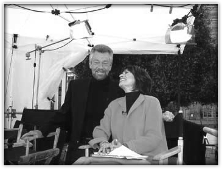
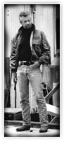
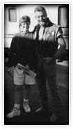
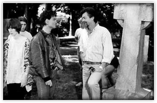
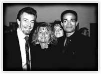
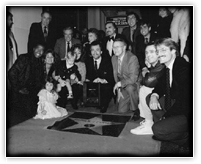
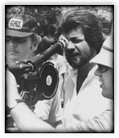

About Stephen
Stephen J. Cannell is the bestselling author of eleven novels including the critically acclaimed Shane Scully series, which includes Cold Hit, Vertical Coffin, Hollywood Tough, The Viking Funeral, and The Tin Collectors. The newest installment, WHITE SISTER, will be published by St. Martin's Press in August 2006.
Stephen J. Cannell is the bestselling author of eleven novels including the critically acclaimed Shane Scully series, which includes Cold Hit, Vertical Coffin, Hollywood Tough, The Viking Funeral, and The Tin Collectors. The newest installment, WHITE SISTER, will be published by St. Martin's Press in August 2006.
In addition, Cannell is the author of Runaway Heart, The Devil’s Workshop, Riding the Snake, King Con, Final Victim, and The Plan.
A feature film of King Con is currently in development. The motion picture rights to Riding the Snake have been optioned, as well as the rights to his unpublished manuscript, Love At First Sight.
An Emmy award-winning writer/producer and Chairman of Cannell Studios, Cannell overcame severe dyslexia to become one of television's most prolific writers. In a highly successful career that spans three decades, he has created or co-created more than 40 shows, of which he has scripted more than 450 episodes and produced or executive produced more than 1,500 episodes. His hits include The Rockford Files, Greatest American Hero, The A-Team, Hunter, Riptide, Hardcastle & McCormick, 21 Jump Street, Wiseguy, The Commish, Profit, and the hit syndicated shows, Renegade and Silk Stalkings.
An unstoppable creative force, Cannell is also a savvy businessman. In 1979, Cannell formed his own independent production company, Stephen J. Cannell Productions, in order to achieve creative control over material he was writing and producing.
Seven years later, he formed The Cannell Studios to oversee all aspects of the organization's operations. Having surpassed the $1 billion mark in production outlays, the studio experienced remarkable growth and diversification in such areas as production (films, mini-series, commercials), merchandising, and first-run/off-network programming.
In the early 1990s, he formed Cannell Communications and began buying television stations in the top 25 American markets. The company continued its growth with the construction of the North Shore Studios (the largest movie studio in Canada) and other subsidiary businesses until it was purchased by New World Communications Group in 1995 (which itself was purchased two years later by 20th Century Fox). Cannell still owns the worldwide distribution rights to more than 1,000 hours of Cannell-produced series and TV movies.
Cannell Studios is currently producing a series of independent thrillers in partnership with IDT Entertainment, and are in preproduction on a new film, The Yellow Wood, for Spyglass Entertainment. Other projects in development include feature films of The A-Team, 21 Jump Street and The Greatest American Hero are in development.
Cannell is an avid spokesperson on Dyslexia, and is a third generation Californian who currently resides in the Los Angeles area with his wife, Marcia, and their three children.